Provides methods for matrix shading, i.e., displaying a color image for
matrix (including correlation matrices) and dist objects given an
optional permutation. The plot arranges colored rectangles to represent the
matrix value. Columns and rows appear in the order in the matrix. This
visualization is also know asi a heatmap. Implementations based on the
grid graphics engine and based n ggplot2 are provided.
Usage
pimage(
x,
order = NULL,
col = NULL,
main = "",
xlab = "",
ylab = "",
zlim = NULL,
key = TRUE,
keylab = "",
symkey = TRUE,
upper_tri = TRUE,
lower_tri = TRUE,
diag = TRUE,
row_labels = NULL,
col_labels = NULL,
prop = TRUE,
flip_axes = FALSE,
reverse_columns = FALSE,
...,
newpage = TRUE,
pop = TRUE,
gp = NULL
)
# S3 method for matrix
pimage(
x,
order = NULL,
col = NULL,
main = "",
xlab = "",
ylab = "",
zlim = NULL,
key = TRUE,
keylab = "",
symkey = TRUE,
upper_tri = TRUE,
lower_tri = TRUE,
diag = TRUE,
row_labels = NULL,
col_labels = NULL,
prop = TRUE,
flip_axes = FALSE,
reverse_columns = FALSE,
...,
newpage = TRUE,
pop = TRUE,
gp = NULL
)
# S3 method for table
pimage(x, order = NULL, ...)
# S3 method for dist
pimage(
x,
order = NULL,
col = NULL,
main = "",
xlab = "",
ylab = "",
zlim = NULL,
key = TRUE,
keylab = "",
symkey = TRUE,
upper_tri = FALSE,
lower_tri = TRUE,
diag = FALSE,
row_labels = NULL,
col_labels = NULL,
prop = TRUE,
flip_axes = FALSE,
reverse_columns = FALSE,
...,
newpage = TRUE,
pop = TRUE,
gp = NULL
)
ggpimage(
x,
order = NULL,
zlim = NULL,
upper_tri = TRUE,
lower_tri = TRUE,
diag = TRUE,
row_labels = NULL,
col_labels = NULL,
prop = TRUE,
flip_axes = FALSE,
reverse_columns = FALSE
)
# S3 method for matrix
ggpimage(
x,
order = NULL,
zlim = NULL,
upper_tri = TRUE,
lower_tri = TRUE,
diag = TRUE,
row_labels = NULL,
col_labels = NULL,
prop = TRUE,
flip_axes = FALSE,
reverse_columns = FALSE
)
# S3 method for dist
ggpimage(
x,
order = NULL,
zlim = NULL,
upper_tri = FALSE,
lower_tri = TRUE,
diag = FALSE,
row_labels = NULL,
col_labels = NULL,
prop = TRUE,
flip_axes = FALSE,
reverse_columns = FALSE
)Arguments
- x
a matrix or an object of class
dist.- order
an object of class
ser_permutationor the name of a seriation method. IfNULLthe order inxis plotted.- col
a list of colors used. If
NULL, a gray scale is used (for matrix larger values are displayed darker and fordistsmaller distances are darker). For matrices containing logical data, black and white is used. For matrices containing negative values a symmetric diverging color palette is used.- main
plot title.
- xlab, ylab
labels for the x and y axes.
- zlim
vector with two elements giving the range (min, max) for representing the values in the matrix.
- key
logical; add a color key? No key is available for logical matrices.
- keylab
string plotted next to the color key.
- symkey
logical; if
xcontains negative values, should the color palate be symmetric (zero is in the middle)>- upper_tri, lower_tri, diag
a logical indicating whether to show the upper triangel, the lower triangle or the diagonal of the (distance) matrix.
- row_labels, col_labels
a logical indicating if row and column labels in
xshould be displayed. IfNULLthen labels are displayed if thexcontains the appropriate dimname and the number of labels is 25 or less. A character vector of the appropriate length with labels can also be supplied.- prop
logical; change the aspect ratio so cells in the image have a equal width and height.
- flip_axes
logical; exchange rows and columns for plotting.
- reverse_columns
logical; revers the order of how the columns are displayed.
- ...
further arguments are ignored.
- newpage, pop, gp
Start plot on a new page, pop the viewports after plotting, and use the supplied
gparobject (see grid).
Details
Plots a matrix in its original row and column orientation. This means, in a plot the columns become the x-coordinates and the rows the y-coordinates (in reverse order).
If x is of class dist it is converted to full-storage
representation before plotting.
Grid-based plot: The viewports used for plotting are called:
"plot", "image" and "colorkey". Note: Since
pimage uses grid, it should not be mixed with base R primitive
plotting functions, but the appropriate functions in
grid-package.
ggplot2-based plot: A ggplot2 object is returned. Colors, axis limits
and other visual aspects can be added using standard ggplot2 functions
(labs, scale_fill_continuous, labs, etc.).
See also
Other plots:
VAT(),
bertinplot(),
dissplot(),
hmap(),
palette()
Examples
set.seed(1234)
## Example: Logical Matrix
x <- matrix(sample(c(FALSE, TRUE), 300, rep = TRUE), ncol = 10,
dimnames = list(1:30, LETTERS[1:10]))
# Matrix for logical values. TRUE values are dark and no color key is shown. There are too many
# Row labels (>25) so they are suppressed.
pimage(x)
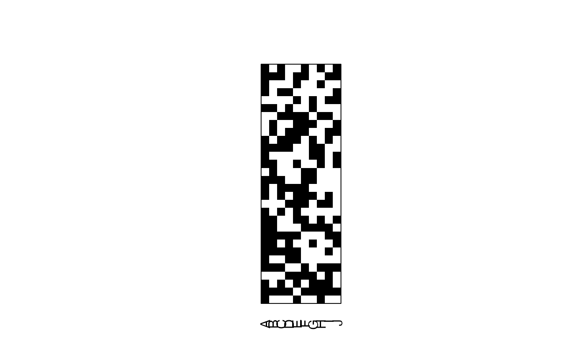
# Show all labels and flip axes or reverse columns
pimage(x, row_labels = TRUE, col_labels = TRUE, flip_axes = TRUE)
pimage(x, row_labels = TRUE, col_labels = TRUE, reverse_columns = TRUE)
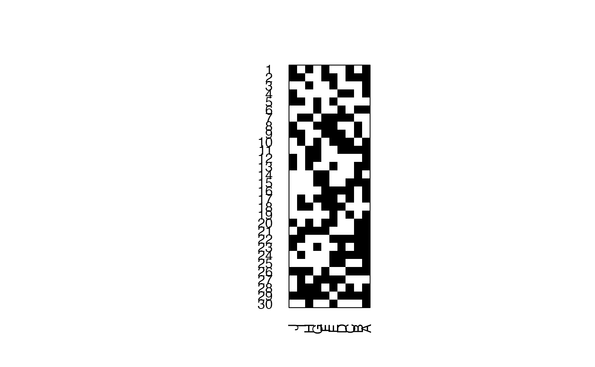
# Reorder matrix, use custom colors, and add a title.
pimage(x, order = seriate(x), row_labels = TRUE, col_labels = TRUE,
col = c("white", "red"), main = "Random Data (Reordered)")
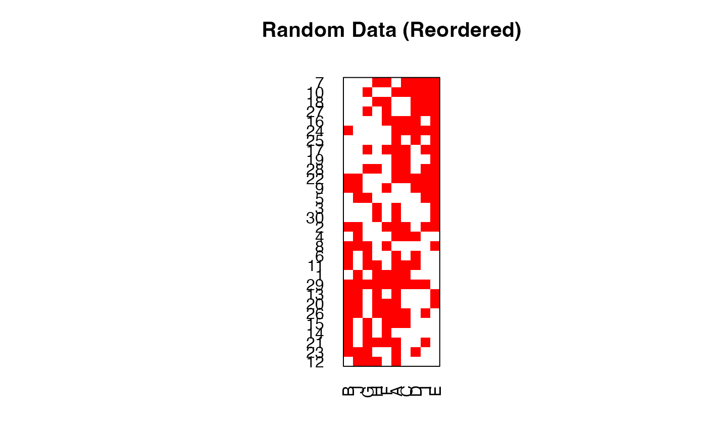
## Example: Positive Matrix
x <- matrix(runif(100), ncol = 10,
dimnames = list(LETTERS[1:10], paste0("X", 1:10)))
pimage(x)
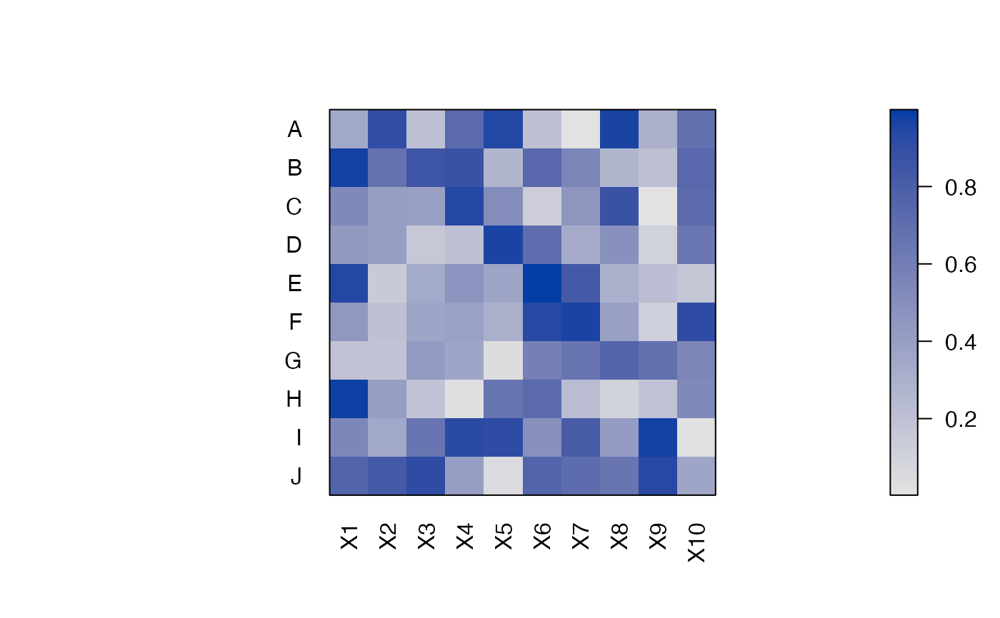
## Example: Pos/Neg. Matrix
x <- matrix(rnorm(100), ncol = 10,
dimnames = list(LETTERS[1:10], paste0("X", 1:10)))
pimage(x)
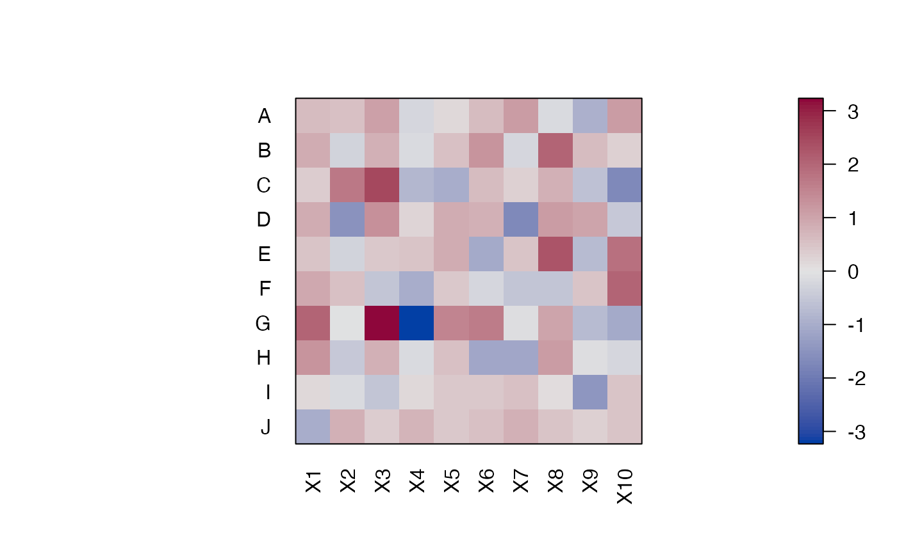
## Example: Distance Matrix
# Show a reordered distance matrix (distances between rows).
# Dark means low distance. The aspect ratio is automatically fixed to 1:1.
# The upper triangle is suppressed triangle
d <- dist(x)
pimage(d, order = seriate(d),
main = "Random Data (Distances)")
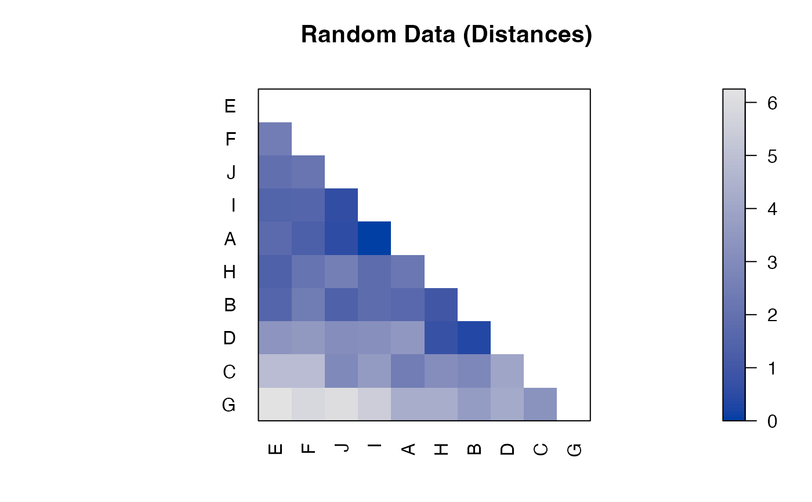
# Show only distances that are smaller than 4 using limits on z.
pimage(d, order = seriate(d),
main = "Random Data (Distances + Theshold)", zlim = c(0, 4))
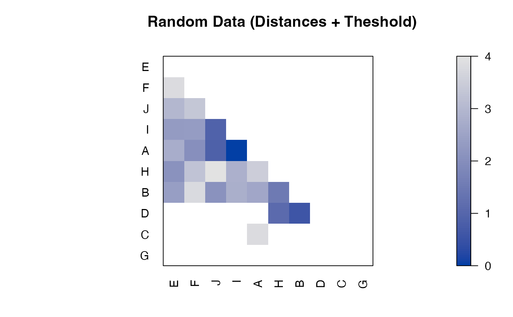
## Example: Correlation Matrix
# we calculate correlation between rows and seriate the matrix
r <- cor(t(x))
r <- permute(r, seriate(r))
pimage(r, upper = FALSE, diag = FALSE, zlim = c(-1, 1), reverse_columns = TRUE,
main = "Random Data (Correlation)")
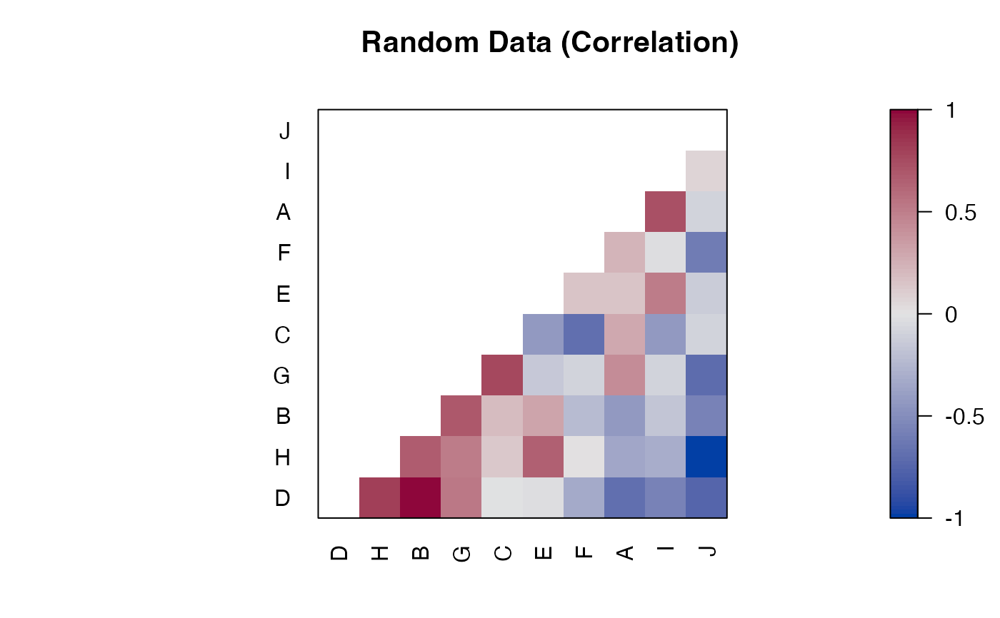
# Add to the plot using functions in package grid
# Note: pop = FALSE allows us to manipulate viewports
library("grid")
pimage(x, pop = FALSE)
# available viewports are: "main", "colorkey", "plot", "image"
current.vpTree()
#> viewport[ROOT]->(viewport[GRID.VP.304]->(viewport[GRID.VP.305]->(viewport[GRID.VP.306]->(viewport[colorkey]->(viewport[colorkey]), viewport[plot]->(viewport[image]))), viewport[main]))
# Highlight cell column 7 (G) / row 5 (from top)/col with a red arrow starting at 5/2
# Note: columns are x and rows are y.
downViewport(name = "image")
grid.lines(x = c(5, 7), y = c(2, 5), arrow = arrow(),
default.units = "native", gp = gpar(col = "red", lwd = 3))
# add a red box around rows 15 and 16
grid.rect(x = 0.5, y = 5.5, width = ncol(x), height = 2,
just = "left",
default.units = "native", gp = gpar(col = "red", lwd = 3, fill = NA))
## remove the viewports
popViewport(0)
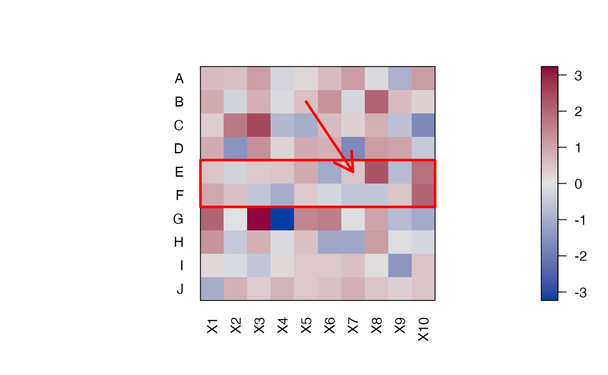
## put several pimages on a page (use grid viewports and newpage = FALSE)
# set up grid layout
library(grid)
grid.newpage()
top_vp <- viewport(layout = grid.layout(nrow = 1, ncol = 2,
widths = unit(c(.4, .6), unit = "npc")))
col1_vp <- viewport(layout.pos.row = 1, layout.pos.col = 1, name = "col1_vp")
col2_vp <- viewport(layout.pos.row = 1, layout.pos.col = 2, name = "col2_vp")
splot <- vpTree(top_vp, vpList(col1_vp, col2_vp))
pushViewport(splot)
seekViewport("col1_vp")
o <- seriate(x)
pimage(x, o, labCol = FALSE, main = "Random Data",
newpage = FALSE)
seekViewport("col2_vp")
## add the reordered dissimilarity matrix for rows
d <- dist(x)
pimage(d, o[[1]], labCol = FALSE, main = "Random Data",
newpage = FALSE)
popViewport(0)
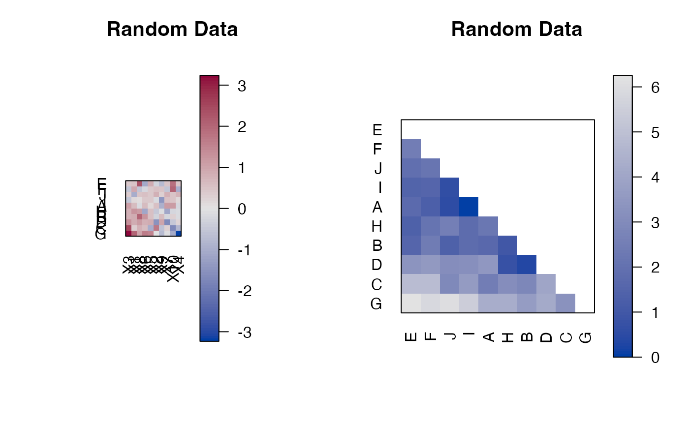
##-------------------------------------------------------------
## ggplot2 Examples
if (require("ggplot2")) {
library("ggplot2")
## Example: Logical Matrix
x <- matrix(sample(c(FALSE, TRUE), 300, rep = TRUE), ncol = 10,
dimnames = list(1:30, LETTERS[1:10]))
# Matrix for logical values. TRUE values are dark. There are too many
# Row labels (>25) so they are suppressed.
ggpimage(x)
# Show all labels and flip axes or reverse columns
ggpimage(x, flip_axes = TRUE, row_labels = TRUE, col_labels = TRUE)
ggpimage(x, reverse_columns = TRUE, row_labels = TRUE, col_labels = TRUE)
# Add lines
ggpimage(x) +
geom_hline(yintercept = seq(0, nrow(x)) + .5) +
geom_vline(xintercept = seq(0, ncol(x)) + .5)
# Reorder matrix, use custom colors, add a title,
# and hide colorkey.
ggpimage(x, order = seriate(x), row_labels = TRUE, col_labels = TRUE) +
scale_fill_manual(values = c("grey90", "red")) +
theme(legend.position = "none") +
labs(title = "Random Data")
## Example: Positive Matrix
x <- matrix(runif(100), ncol = 10,
dimnames = list(LETTERS[1:10], paste0("X", 1:10)))
ggpimage(x, order = seriate(x)) +
labs(title = "Random Data")
#' ## Example: Pos/Neg. Matrix
x <- matrix(rnorm(100), ncol = 10,
dimnames = list(LETTERS[1:10], paste0("X", 1:10)))
ggpimage(x, order = seriate(x)) +
labs(title = "Random Data")
## Example: Distance Matrix
# Show a reordered distance matrix (distances between rows).
# Dark means low distance. The aspect ratio is automatically fixed to 1:1.
# The upper triangle is suppressed triangle
d <- dist(x)
ggpimage(d, order = seriate(d)) +
labs(title = "Random Data", subtitle = "Distances")
# Show also upper triangle and diagonal
ggpimage(d, order = seriate(d), upper_tri = TRUE, diag = TRUE) +
labs(title = "Random Data", subtitle = "Distances")
# Show only distances that are smaller than 4 using limits on fill.
ggpimage(d, order = seriate(d), zlim = c(0, 4)) +
labs(title = "Random Data (Distances + Theshold)")
## Example: Correlation Matrix
# we calculate correlation between rows and seriate the matrix
r <- cor(t(x))
r <- permute(r, seriate(r))
ggpimage(r, zlim = c(-1, 1), upper = FALSE, diag = FALSE, reverse_columns = TRUE) +
geom_text(aes(x = col, y = row, label = round(x, 2)), color = "black", size = 4) +
labs(title = "Random Data", subtitle = "Correlation")
## Example: Custom themes and colors
# Use ggplot2 themes with theme_set
old_theme <- theme_set(theme_linedraw())
ggpimage(d, order = seriate(d)) +
labs(title = "Random Data (Distances)")
theme_set(old_theme)
# Use custom color palettes: Gray scale, Colorbrewer (provided in ggplot2) and colorspace
ggpimage(d, order = seriate(d), upper_tri = FALSE) +
scale_fill_gradient(low = "black", high = "white", na.value = "white")
ggpimage(d, order = seriate(d), upper_tri = FALSE) +
scale_fill_distiller(palette = "Spectral", direction = +1, na.value = "white")
ggpimage(d, order = seriate(d), upper_tri = FALSE) +
colorspace::scale_fill_continuous_sequential("Reds", rev = FALSE, na.value = "white")
}
#> Scale for 'fill' is already present. Adding another scale for 'fill', which
#> will replace the existing scale.
#> Scale for 'fill' is already present. Adding another scale for 'fill', which
#> will replace the existing scale.
#> Scale for 'fill' is already present. Adding another scale for 'fill', which
#> will replace the existing scale.
#> Scale for 'fill' is already present. Adding another scale for 'fill', which
#> will replace the existing scale.
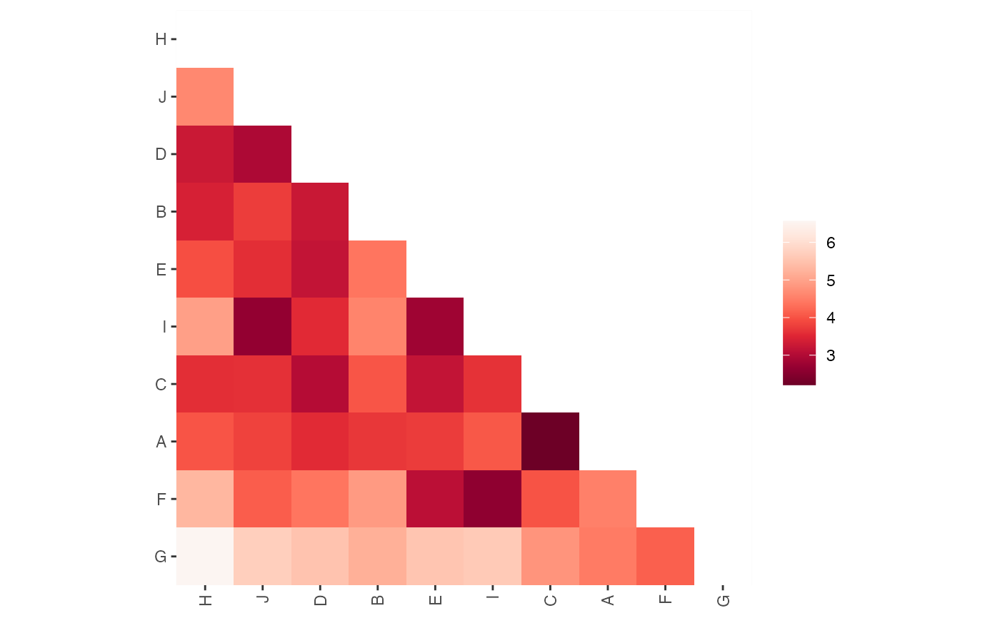